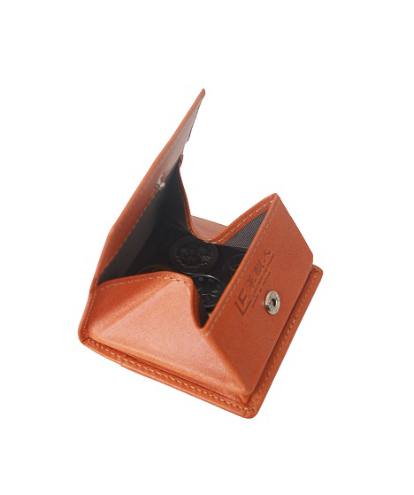
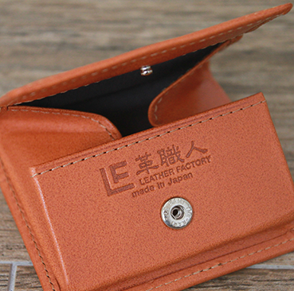

|
怎樣才是穿搭的鐵則？ 了解整齊劃一美感的大人們，您最期待的零錢包上市了。 |
ULTIMATE 零錢包 |

|  |
❶ 可站立的「內摺摺邊」 ❷ 內側隱約的存在感 ❸ 讓你愛不釋手的小細節 ❹ 三種顏色供您選擇 ❺ 零錢不易掉出的秘密 |
|  | |
| ❶可站立的「內摺摺邊」 | ❷內側隱約的存在感 |
|
與Governor長夾、Strain紙鈔夾皮夾使用同款皮革-牛油皮(オイルヌメ)，Ultimate零錢包您一定不能錯過。內摺摺邊相當俐落，打開便可清楚看見底部，使用方便，是大受好評的人氣款。 內摺部份仔細貼上蕊材。外側為牛油皮，內側則搭配咖啡色山東絹，再仔細地縫合。正因為如此用心製作，內摺部份才能成功站立。 |
掀開零錢包，內側鈕扣釘上方烙印上「革職人」LOGO。 以加熱過的黃銅印章所烙印上的地方顏色呈現較深，這就是天然皮革的特徵，樸素的質地更能感受到皮革的溫度。 |
| ❸讓你愛不釋手的小細節 | ❹三種顏色供您選擇 |
| 背面附上袖口袋，只要一點小巧思就能做到。內側看不太到的素材也使用山東絹。 雖然很小，但為了外觀與使用手感，結合各種素材，成為奢華的零錢包。 | 可在皮革上清楚看見牛皮的血管紋路、傷痕及皺摺，呈現出野性且富有油質的質地，握在手中便讓人愛不釋手。焦糖色用久了會逐漸轉化為深褐色；棕色則是會加深顏色且油亮，更顯層次感；附有光澤的成熟黑色也非常受歡迎喔。 |
| ❺零錢不易掉出的秘密 | |
|
方便查看與拿取的盒狀零錢包。過去這類的商品都有零錢容易掉出的缺點。為克服這點，不斷進行改良才成功的「秘密」- 就是在內側邊緣放入壓縮海綿，讓皮革有些許高低差與彈性，如此一來零錢便不易掉出，這可是「革職人」的獨家技術及巧思哩！ ( ENTIRE II短夾，也有相同秘密... >> ) |
|


|
日本國產牛原皮使用
「栃木皮革」-日本最高峰的皮革製造商
本產品採用日本最高峰的皮革製造商「栃木皮革」所生產之皮革，堅持使用天然素材。使用日本國產牛原皮，花費一個半月以單寧酸鞣皮。此外，「栃木皮革」擁有超過20個獨家工法，以獨特製法做出講究的皮革。 本產品使用浸漬植物單寧酸的鞣皮，此種牛油皮製作完成後富含動物性油脂。成品柔軟滑順。為展現皮革原始風情，表面幾乎不再上色，保留皮革原色。因此皮革表現可見皺褶、血管紋路、細微傷痕等細紋，由自然紋路更可看出皮革本身的優異程度。 使用時間越久越有光澤，也會產生煙燻般的質地。彷彿能吸附在手上的柔軟觸感，使用越久越有個人獨特的印記，皮革的變化令人期待。對於皮革愛好者，此種特性更能讓人感受到絕佳的樂趣。 |


|
Ultimate零錢包輕巧好攜帶，不佔空間，果然是人氣單品 身上通常不想帶太多零錢！有這樣想法的人很多，因此依此需求特別進行開發。 牛油皮質地優良，保留皮革本身的香味與質地。與同款皮革所製成的Governor長夾或Strain紙鈔夾皮夾搭配使用，度過愉快的每一天♪ |
|
||||||||||
|
[提醒您] |
||||||||||
|
|
||||||||||
|
焦糖色 |

棕色 |
黑色 |